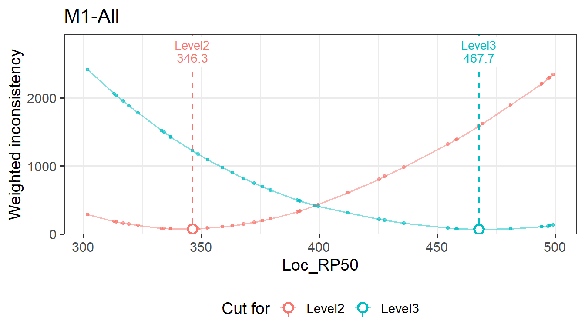
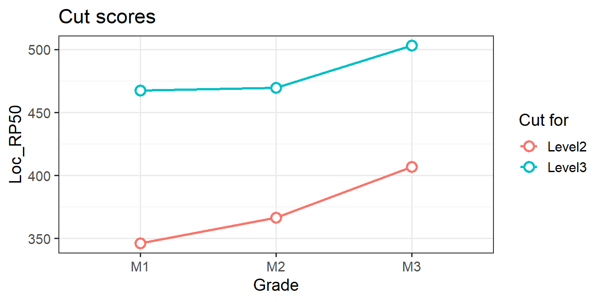
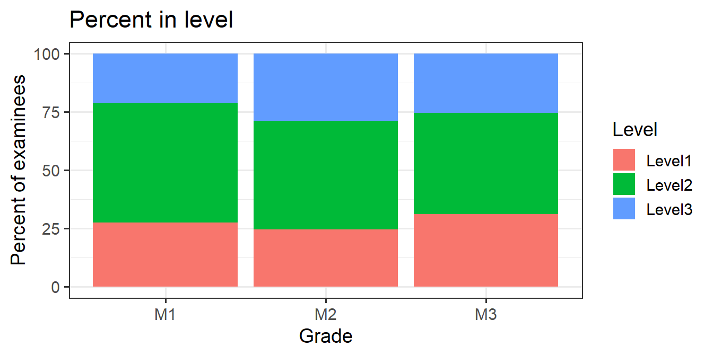

# install.packages("remotes")
remotes::install_github("sooyongl/emss")Getting started with emss
emss estimates cut scores with embedded standard setting (ESS; Lewis & Cook, 2020). Panelists align each item to the performance level whose descriptor it matches. emss then places each cut score where the items’ locations on the reporting scale agree best with those alignments. This article covers the basic workflow. How embedded standard setting works explains what is computed and why, with a worked example and the underlying mathematics.
Installation
What emss needs
| Input | Required | One row per | Main columns |
|---|---|---|---|
| Ratings | yes | panelist × item (× round) | grade, panelist, item ID, aligned level; optional table and round |
| Items | yes | item | grade, item ID, one or more location columns (e.g., RP67); optional Domain, Order_of_Difficulty
|
| Setup | optional | grade |
Level Options (level labels, lowest to highest), SD, EC
|
| Examinee scores | optional | grade × score | grade, Score, Freq (long format), for impact data |
The location is each item’s position on the reporting scale, typically a response-probability location such as RP67. The item table may hold several location columns. The location argument of emstans() picks one.
A simulated study
genFakeDataSet() simulates a complete study: here three grades, two tables of four panelists each, 40 items per grade, three performance levels, and three content domains.
set.seed(7)
sim <- genFakeDataSet(ngca = 3, ntable = 2, npanelist = 4, cor_val = 0.7, nlevel = 3,
sdinp = 1, ecinp = 0, n = 40, 300, 500,
domains = c("Number", "Algebra", "Geometry"))
names(sim)
#> [1] "setup" "panelist" "rating" "item_data"
#> [5] "examineedata_data"
head(sim$rating[, c("GCA", "Round", "Table", "Panelist", "Item_ID", "ALD")], 3)
#> # A tibble: 3 × 6
#> GCA Round Table Panelist Item_ID ALD
#> <chr> <dbl> <chr> <chr> <chr> <chr>
#> 1 M1 1 T1 M1.T1.1 M1_1 Level1
#> 2 M1 1 T1 M1.T1.1 M1_2 Level1
#> 3 M1 1 T1 M1.T1.1 M1_3 Level2
head(sim$item_data, 3)
#> # A tibble: 3 × 7
#> GCA Domain Item_ID Total_points Point Order_of_Difficulty Loc_RP50
#> <chr> <chr> <chr> <dbl> <dbl> <int> <dbl>
#> 1 M1 Number M1_1 1 1 1 302.
#> 2 M1 Geometry M1_2 1 1 2 313.
#> 3 M1 Algebra M1_3 1 1 3 314.sdinp and ecinp must be named here: the unnamed values that follow n (300 and 500) are the range of the item locations.
Estimating cut scores
res <- emstans(data = sim, location = "Loc_RP50")
res
#> Embedded Standard Setting
#> method: ESS-Weight | location: Loc_RP50 | 3 unit(s)
#>
#> Modal cut scores (all tables):
#> M1-All Level2 346.300 Level3 467.700
#> M2-All Level2 366.600 Level3 469.600
#> M3-All Level2 406.800 Level3 503.300
#>
#> Use extract() for tables, report() for the full report.Each grade is analysed separately. For each one, emss estimates a cut score for every panelist and for the modal alignment across panelists, per table and for all tables together. The printed cut scores are the modal cuts for all tables. Each cut is named by the level it opens: Level2 is the lowest score in Level 2.
The main options are:
| Argument | Values |
|---|---|
location |
name of the item location column, such as "RP67"
|
method |
"weight" (ESS-Weight, default) or "count" (ESS-Count) |
grades |
grades to analyse, by name or position (default: all) |
by_domain, domains
|
also analyse each content domain, or the listed ones |
smooth |
TRUE to take cuts from a GAM-smoothed inconsistency profile |
Results
summary() puts the modal cut next to the median and average of the panelists’ cuts, and adds the agreement between aligned and empirical levels:
summary(res)
#> unit cut_level modal median average agreement weighted_kappa
#> 1 M1-All Level2 346.3 347.50 347.59 0.825 0.810
#> 2 M1-All Level3 467.7 458.25 455.90 0.825 0.810
#> 3 M2-All Level2 366.6 368.60 371.79 0.850 0.840
#> 4 M2-All Level3 469.6 437.45 446.98 0.850 0.840
#> 5 M3-All Level2 406.8 410.10 407.35 0.800 0.789
#> 6 M3-All Level3 503.3 509.90 503.06 0.800 0.789extract() returns the results as data frames, with level labels as ordered factors:
extract(res, "cutscore") # modal cut scores, one vector per unit
#> $`M1-All`
#> Level2 Level3
#> 346.3 467.7
#>
#> $`M2-All`
#> Level2 Level3
#> 366.6 469.6
#>
#> $`M3-All`
#> Level2 Level3
#> 406.8 503.3
ind <- extract(res, "individual") # panelist, modal, median, average
head(ind$panelist[, c("unit", "table", "panelist", "correlation", "cut_level",
"page", "cut_score")])
#> unit table panelist correlation cut_level page cut_score
#> 1 M1-All T1 M1.T1.1 0.5824 Level2 12 348.7
#> 3 M1-All T1 M1.T1.2 0.5708 Level2 15 363.3
#> 5 M1-All T1 M1.T1.3 0.7180 Level2 11 346.3
#> 7 M1-All T1 M1.T1.4 0.7042 Level2 6 323.1
#> 9 M1-All T2 M1.T2.1 0.6059 Level2 13 352.7
#> 11 M1-All T2 M1.T2.2 0.6565 Level2 15 363.3
extract(res, "detailed")$agreement # agreement and weighted kappa
#> unit type n agree disagree adjacent discrepant weighted_kappa
#> 1 M1-All exact 40 33 7 7 0 0.8103
#> 2 M1-All ec 40 33 7 7 0 0.8103
#> 3 M2-All exact 40 34 6 6 0 0.8402
#> 4 M2-All ec 40 34 6 6 0 0.8402
#> 5 M3-All exact 40 32 8 8 0 0.7886
#> 6 M3-All ec 40 32 8 8 0 0.7886
im <- extract(res, "summary") # impact data
im[im$unit == "M1-All", ]
#> unit level page_from page_to cut_score pct_in pct_at_above pct_below
#> 1 M1-All Level1 1 10 NA 27.5 100.0 NA
#> 2 M1-All Level2 11 31 346.3 51.3 72.5 27.5
#> 3 M1-All Level3 32 40 467.7 21.2 21.2 78.8
rv <- extract(res, "review") # items whose alignment disagrees with the cuts
head(rv[rv$status != "Consistent", c("unit", "item_id", "aligned", "operational",
"location", "distance", "status")])
#> unit item_id aligned operational location distance status
#> 3 M1-All M1_3 Level2 Level1 313.9 -32.4 Inconsistent
#> 4 M1-All M1_4 Level2 Level1 316.9 -29.4 Inconsistent
#> 11 M1-All M1_11 Level1 Level2 346.3 1.0 Inconsistent
#> 14 M1-All M1_14 Level1 Level2 359.0 13.7 Inconsistent
#> 31 M1-All M1_31 Level3 Level2 458.4 -9.3 Inconsistent
#> 36 M1-All M1_36 Level2 Level3 494.4 27.7 InconsistentOther options are "profile" (the inconsistency profile of each unit) and "all".
Plots
The inconsistency profile shows, for every candidate cut, how inconsistent the items would be. The selected cuts are at the minima:
plot(res, "profile", unit = "M1-All")
The impact plots show cut scores and examinee percentages across grades:

p$percent_in
Both are ggplot objects and can be modified with the usual ggplot2 functions.
Report
report() builds an interactive HTML report with every table and plot, sections for individual cuts, agreement, impact and item review:
More analyses
# ESS-Count instead of ESS-Weight
emstans(data = sim, location = "Loc_RP50", method = "count")
#> Embedded Standard Setting
#> method: ESS-Count | location: Loc_RP50 | 3 unit(s)
#>
#> Modal cut scores (all tables):
#> M1-All Level2 348.700 Level3 458.400
#> M2-All Level2 366.600 Level3 475.200
#> M3-All Level2 415.800 Level3 481.900
#>
#> Use extract() for tables, report() for the full report.
# Each content domain as well as all items, for grade M1 only
res_dom <- emstans(data = sim, location = "Loc_RP50", grades = "M1", by_domain = TRUE)
extract(res_dom, "cutscore")
#> $`M1-All`
#> Level2 Level3
#> 346.3 467.7
#>
#> $`M1-Algebra`
#> Level2 Level3
#> 337.1 494.2
#>
#> $`M1-Geometry`
#> Level2 Level3
#> 348.7 458.4
#>
#> $`M1-Number`
#> Level2 Level3
#> 372.4 497.7When the ratings contain several rounds, each round is analysed separately and named accordingly, for example M1-All Round 2.
Your own data
An EmStanS Excel workbook (sheets Setup, Panelists, Ratings, ItemMetaData, ExamineeMetaData) can be passed directly:
res <- emstans("my_study.xlsx", location = "RP67")Data frames or CSV files with other layouts go through ess_data(). Only ratings and items are required. Level labels, SD and EC can come from a setup table, from arguments, or both (arguments win). Columns whose names differ from the defaults are mapped by name or position:
d <- ess_data(
ratings = "ratings.csv",
items = "items.csv",
examinees = "scores.csv", # Grade, Score, Freq
levels = c("Basic", "Proficient", "Advanced"), # lowest to highest
sd = 30,
ec = 5,
columns = list(ratings = list(panelist = "Rater", level = "Judgment"))
)
d # what was read
res <- emstans(data = d, location = "RP67")Level labels can also differ by grade, for example levels = list(G4 = c("E", "M", "L"), G5 = c("B", "P", "A")). Every table, plot and report uses the labels, in level order.
Next steps
- How embedded standard setting works: ESS-Count and ESS-Weight with a worked example, and the mathematics behind each result.
- Setting cut scores manually: evaluate cut scores you set yourself.
- Bootstrapping cut scores: the sampling variability of cut scores.
References
Lewis, D., & Cook, R. (2020). Embedded standard setting: Aligning standard-setting methodology with contemporary assessment design principles. Educational Measurement: Issues and Practice, 39(1), 8–21. https://doi.org/10.1111/emip.12318